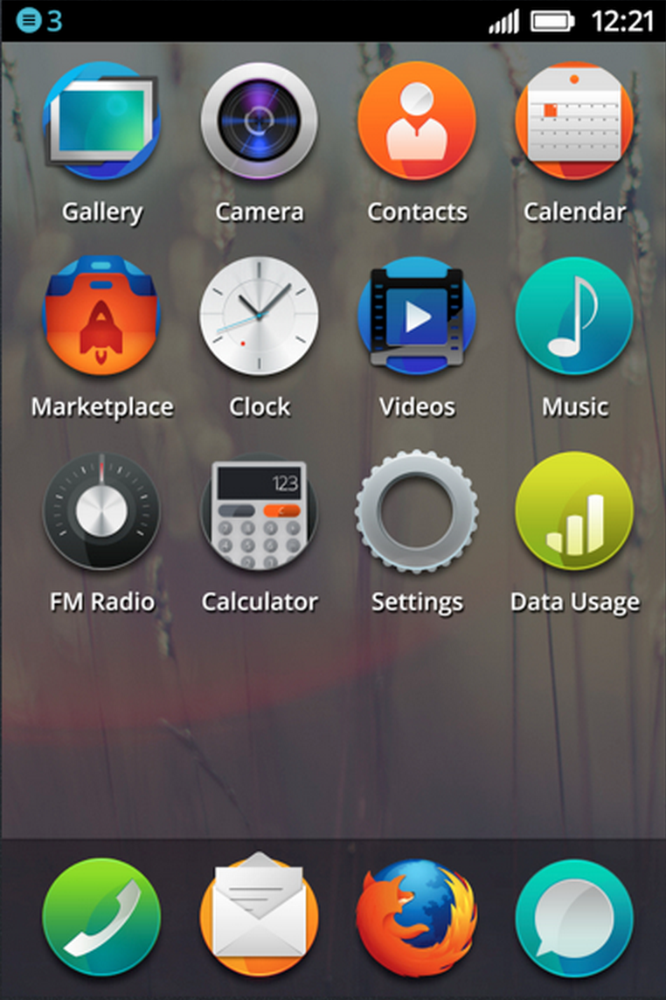
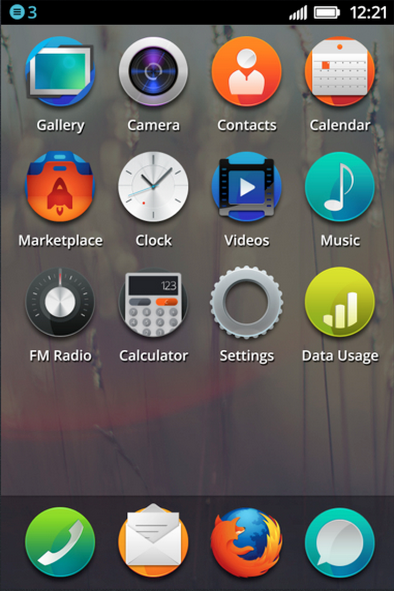
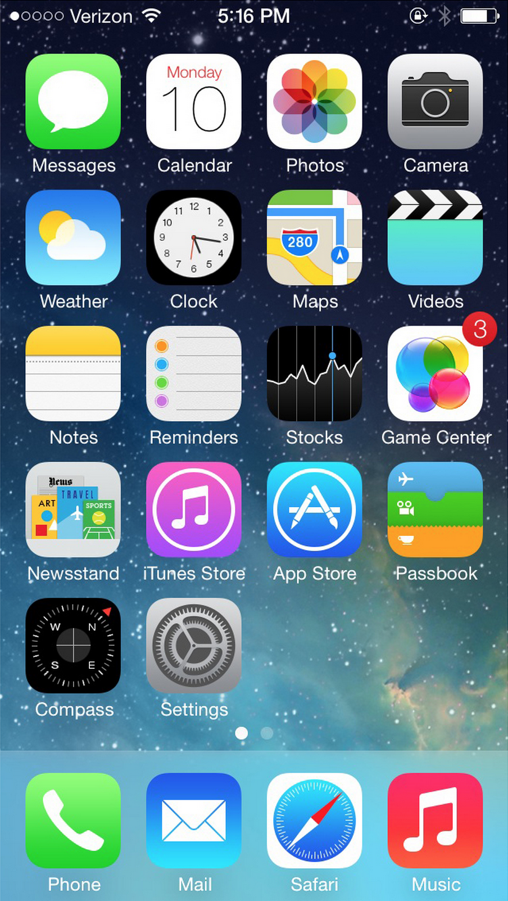
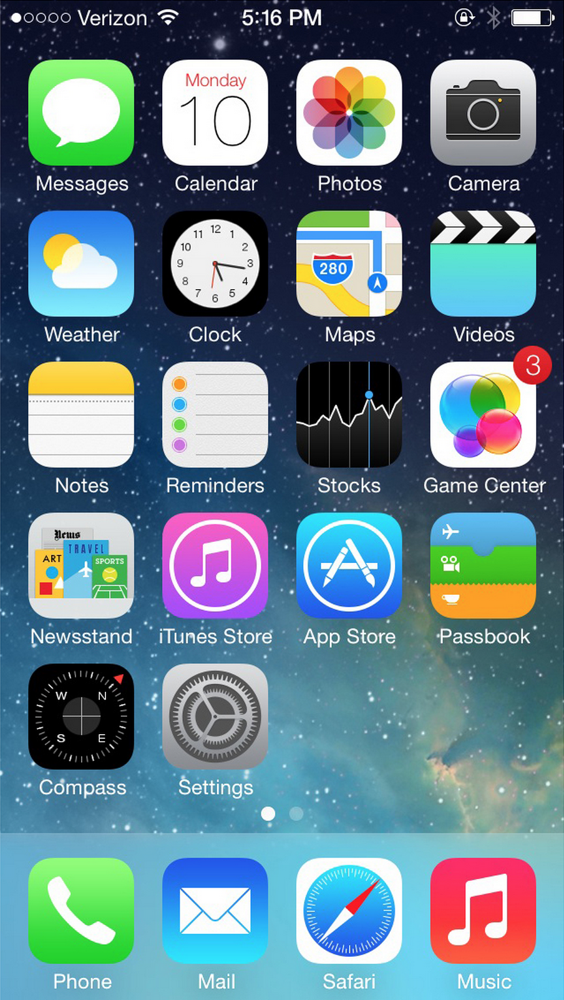

Firefox OS
Oslo Work Week

Torgeir Hovden, CTO Telenor Digital
HMTL, CSS and Javascript = Rich Clients


So what are we doing about it?

iTelco
 Pure webRTC
Pure webRTC
 SMS over websockets
Telephony over webRTC
5
6
SMS over websockets
Telephony over webRTC
5
6
People will get online through mobile

So what smartphone OS will the next billion people get?
 

 
#

#